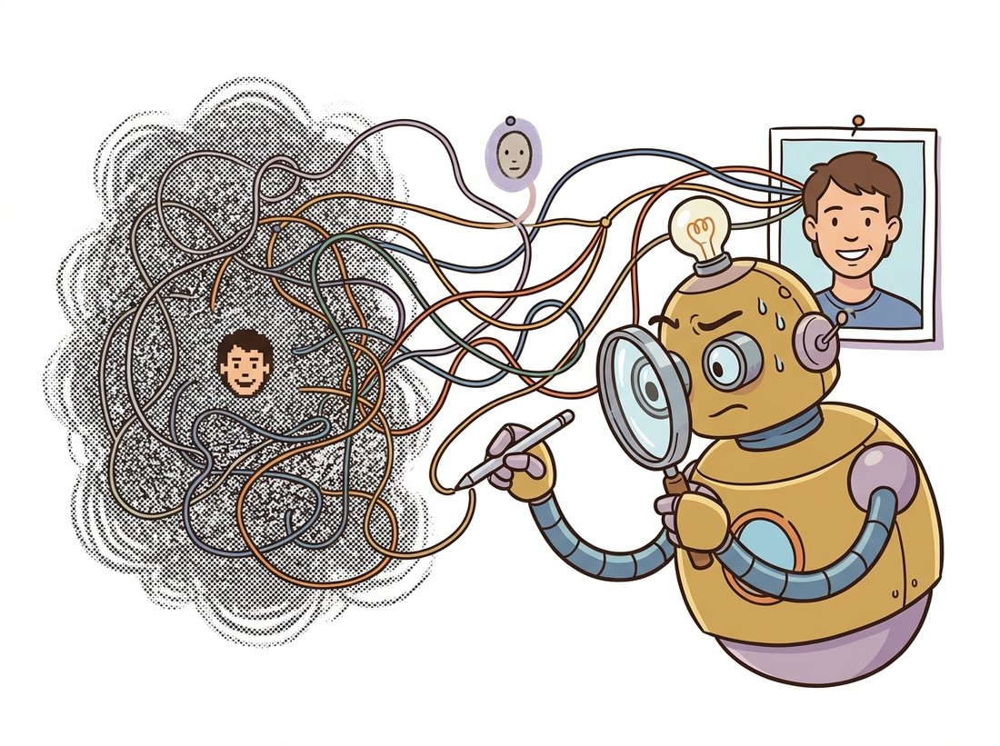

"To edit your photograph, I must first imagine the exact noise I would have hallucinated to paint it. It is like reverse-engineering a dream from the bedsheets."
A Diffusion Model Practicing Forensic Reconstruction
A diffusion model can only edit images it can generate, so editing a real photograph first requires inversion: finding the initial noise and conditioning that, run forward through the model, reproduce that exact photo. The deterministic DDIM sampler of Chapter 33 can be run backward to recover an approximate noise trajectory, but classifier-free guidance breaks the approximation, so the naive inversion reconstructs poorly and edits unfaithfully. Null-text inversion repairs this by optimizing the unconditional embedding at each timestep so the guided trajectory matches the unguided one that was inverted. With a faithful inversion in hand, Prompt-to-Prompt attention control performs the actual edit by reusing the original image's cross-attention maps while swapping only the words that should change, so structure is preserved and only the named content moves.
Every editing method so far quietly assumed the image was either generated by the model (so its noise is known) or could be roughly approximated. Real photographs are neither. A photo was made by a camera, not by the model, and to bring it under the model's control you must answer a hard question: what noise would this model have started from to produce this exact image? This section is about answering that question well enough to edit a real photo and have the edit change only what you intended. It is the most technically demanding section of the chapter and the one that makes everything before it work on real images. The illustration below frames inversion as exactly this forensic reconstruction.

1. Why Encoding Is Not Inversion Intermediate
A natural first thought: to edit a real image, just encode it with the VAE of Chapter 31 to get its latent, add some noise, and denoise with a new prompt (this is the strength-based image-to-image of many tools). This works for heavy stylization but fails for precise editing, because adding random noise and denoising is a lossy, stochastic round trip: it does not return the original image, it returns a nearby image the model finds plausible. Faces shift, text scrambles, fine detail is reinvented. To edit faithfully you need the specific noise that regenerates this image, not just any noise of the right magnitude. The key insight below makes the stakes of that distinction concrete.
Take a portrait of a specific person, ask for the smallest possible edit ("add sunglasses"), and run it the lossy way: encode, add noise, denoise. Watch what comes back. The sunglasses appear, but so does a subtle, jarring change you did not request, the face is no longer quite the same person. The jaw narrows, the eyes drift apart, a stranger now wears your subject's hair. This is not a tuning failure; it is structural. Random noise of the right magnitude can be denoised into thousands of plausible faces, and the model returns whichever one its prior prefers, not the one you photographed. Inversion exists to remove that lottery: instead of a noise that yields a face, it recovers the noise that regenerates this face. The difference between "a person who resembles your subject" and "your subject" is the entire reason the rest of this section is worth the compute.
Recovering that specific noise is inversion. The key enabling fact is that the DDIM sampler of Section 33.4 is deterministic: given a latent and the predicted noise, the reverse step is a fixed function with no random draw. A deterministic map can, in principle, be run in either direction. The DDIM update that denoises from $z_t$ to $z_{t-1}$ can be rearranged to noise from $z_{t-1}$ up to $z_t$, walking the trajectory backward from the clean image toward noise. Figure 35.5.1 contrasts the lossy and the inversion routes.
2. DDIM Inversion Advanced
The DDIM forward (denoising) step predicts the clean image $\hat{z}_0$ from $z_t$ using the network's noise estimate, then takes a deterministic step to $z_{t-1}$. Inversion reverses this: it assumes the noise prediction at $z_{t-1}$ is approximately the same as at $z_t$ (true in the limit of small steps) and solves for $z_t$ given $z_{t-1}$, marching from $t=0$ (the clean encoded image) up to $t=T$ (the recovered noise). The update, with $\bar\alpha_t$ the cumulative product from Chapter 33, is the DDIM step read in the increasing-$t$ direction. The function below implements exactly that march.
# DDIM inversion: recover the noise latent z_T that, denoised deterministically,
# regenerates a given clean latent z0. It runs the DDIM step in the increasing-t
# direction, reusing the same noise prediction the local-linearity assumption allows.
import torch
@torch.no_grad()
def ddim_invert(z0, model, scheduler, prompt_embeds, num_steps=50):
"""Walk a clean latent z0 backward to recover the noise that regenerates it."""
scheduler.set_timesteps(num_steps, device=z0.device)
timesteps = reversed(scheduler.timesteps) # go from low t to high t
z = z0
for i, t in enumerate(timesteps):
eps = model(z, t, encoder_hidden_states=prompt_embeds).sample # noise pred
ab_t = scheduler.alphas_cumprod[t]
t_next = timesteps[i + 1] if i + 1 < len(timesteps) else t
ab_next = scheduler.alphas_cumprod[t_next]
# Predict x0, then re-noise to the NEXT (higher) timestep: the inverse step.
z0_pred = (z - (1 - ab_t).sqrt() * eps) / ab_t.sqrt()
z = ab_next.sqrt() * z0_pred + (1 - ab_next).sqrt() * eps
return z # approx. latent noise z_Tddim_invert loop marches over reversed(scheduler.timesteps), at each step predicting the noise, recovering the implied z0_pred, then re-noising to the next higher timestep. Run with the empty or descriptive prompt embedding, the returned z regenerates the input image closely when denoised without classifier-free guidance.Because the DDIM sampler is deterministic, it is natural to assume DDIM inversion is an exact, lossless round trip that recovers the true noise of the photo. It is not. The inversion in Code Fragment 1 reuses the noise prediction from the current step as if it were the prediction at the next step, an approximation that is exact only in the limit of infinitely small steps. With a finite step count the recovered latent is approximate, so even at guidance $1$ the reconstruction is close but not pixel-perfect, and the error compounds once strong classifier-free guidance is added (the guidance gap below). Determinism guarantees the same output for the same input; it does not guarantee that running the deterministic map backward then forward returns to where you started. This is precisely why null-text inversion and its successors exist, rather than DDIM inversion being the final word.
This inversion is accurate when generation uses no guidance. But practical editing wants a guidance scale well above 1, and there the inversion breaks: the noise prediction used during inversion (computed without strong guidance) no longer matches the guided prediction used during generation, so the trajectories diverge and the reconstruction drifts. This guidance gap is the central obstacle to faithful real-image editing, and it is what the next method exists to close.
DDIM inversion works by assuming the noise prediction barely changes between adjacent timesteps, so the deterministic step can be inverted by reusing the same prediction. That assumption holds when steps are small and guidance is mild, and fails when guidance is strong, because guidance amplifies the difference between conditional and unconditional predictions, breaking the local-linearity premise. Most inversion failures trace to this single approximation; the fixes either shrink the gap (null-text optimization) or change the editing mechanism so it tolerates an imperfect inversion (Prompt-to-Prompt).
3. Null-Text Inversion: Closing the Guidance Gap Advanced
Recall classifier-free guidance from Chapter 33: the guided noise prediction extrapolates from the unconditional (null) prediction toward the conditional one, $\epsilon_{\text{guided}} = \epsilon_\varnothing + w(\epsilon_c - \epsilon_\varnothing)$, where $\epsilon_\varnothing$ uses an empty "null-text" embedding. Null-text inversion makes a clever observation: the null embedding is just another input, and we are free to optimize it per timestep so that the guided generation trajectory lands back on the inverted (unguided) trajectory we recorded. Concretely, you first run DDIM inversion to get a reference trajectory $\{z_t^*\}$, then for each timestep optimize the null embedding $\varnothing_t$ to minimize the distance between the guided step's output and $z_{t-1}^*$:
Only the null embeddings are optimized; the model weights and the real prompt are fixed. After this short per-image optimization (a few hundred gradient steps over the timesteps, seconds to a minute on a GPU), the model can regenerate the real photo under full guidance with high fidelity, and any edit applied through the prompt now acts on a faithful reconstruction. Null-text inversion is what made convincing text-driven editing of arbitrary real photos practical, and it remains a strong baseline; lighter successors (negative-prompt inversion, which skips the optimization, and direct-inversion methods) trade a little fidelity for speed.
There is a quiet absurdity in null-text inversion: the model spends real compute optimizing what to say when it says nothing. The "null" embedding is supposed to be the empty prompt, the absence of conditioning, yet the method tunes it per timestep into a precisely calibrated piece of emptiness that pulls the guided trajectory back onto the rails. It is the diffusion equivalent of an actor agonizing over the perfect pause. The payoff is unglamorous and total: get the silence right and the model can redraw your photograph well enough to fool you into thinking it was never inverted at all.
4. Prompt-to-Prompt: Editing Through Attention Advanced
With a faithful inversion, the question becomes how to apply an edit that changes the named thing and nothing else. Prompt-to-Prompt answers it through the cross-attention maps. Recall from Chapter 34 that cross-attention produces, for each word in the prompt, a spatial attention map showing where that word influences the image; the word "cat" attends to the cat's pixels. These maps carry the image's layout. Prompt-to-Prompt's insight is that to change content while keeping structure, you generate with the new prompt but inject the original prompt's attention maps for the words that are shared, and let only the changed word compute fresh attention.
So to turn "a photo of a cat" into "a photo of a dog," you keep the attention maps for "a photo of a" exactly as they were, which pins the composition, pose, and background, and let "dog" attend freely into the region the original "cat" occupied. The result is a dog in the cat's exact pose and scene. Three operations cover the common edits: map replacement swaps a word while reusing layout (cat to dog), map injection adds a word (adding "snowy") by re-using all original maps and inserting the new token's, and attention re-weighting strengthens or weakens a word's influence by scaling its map (more or less "snowy"). Figure 35.5.2 shows the swap.
Hand-implementing this stack means writing the DDIM inversion loop, the per-timestep null-text optimization, and attention-store hooks that capture and re-inject cross-attention on every U-Net block, several hundred careful lines. diffusers packages the pieces: DDIMInverseScheduler provides the inversion step, the StableDiffusionPix2PixZeroPipeline and community inversion pipelines wrap null-text-style optimization, and the attention-processor API lets you register a processor that stores and replaces maps for Prompt-to-Prompt without subclassing the U-Net. Build the inversion loop once to feel the guidance gap; in production you compose the library's inverse scheduler and attention processors.
Who: the imaging team at a consumer photo-editing app, 2024. Situation: users wanted one-tap edits on their own photos ("make this summer shot look like autumn," "swap my blue car for red") that kept the photo recognizably theirs. Problem: their first version used lossy image-to-image, and users complained that faces and license plates changed, the photo no longer looked like their photo. Decision: they replaced the round trip with DDIM inversion plus null-text optimization to get a faithful reconstruction, then applied edits through Prompt-to-Prompt attention control so only the named concept (the season, the car color) moved. They capped the null-text optimization at a fixed time budget to keep edits responsive. Result: edits that preserved identity and unmentioned detail, with the inversion cost hidden behind a brief progress spinner. Lesson: for editing users' own images, faithful inversion is not a nicety, it is the difference between "this is still my photo" and "this is a different photo that vaguely resembles mine."
Null-text inversion's per-image optimization is the bottleneck. The 2023 to 2025 frontier removes it. Negative-prompt inversion (2023, arXiv:2305.16807) and Direct Inversion (2023, arXiv:2310.01506) reach comparable fidelity with no optimization by reusing the inversion trajectory more cleverly. The edit-friendly DDPM noise space (CVPR 2024, arXiv:2304.06140) records the per-step noises so any edit re-runs without re-inverting. On the architecture side, the in-context and flow-matching editors of Section 35.4 (FLUX.1 Kontext, 2025, arXiv:2506.15742) sidestep explicit inversion entirely: the model conditions on the real image directly and is trained to edit faithfully, so the guidance gap never opens. The mental model from this section, that faithful editing requires faithfully representing the real image inside the model, remains correct; what changes is that the representation increasingly comes from a learned encoder rather than a per-image optimization.
Explain in three or four sentences why the lossy "encode, add noise, denoise" route returns a different image than the input, while DDIM inversion can return the same image. Reference the determinism of the DDIM sampler and the difference between adding a random noise sample and recovering the specific noise trajectory. Then state what role the guidance scale plays in why the naive DDIM inversion still drifts.
Using the ddim_invert function in subsection 2, invert a real image, then denoise the recovered noise back to an image with guidance scale 1.0 and again with guidance scale 7.5. Compute PSNR and SSIM (the metrics from Chapter 1) between each reconstruction and the original. Confirm that fidelity is high at guidance 1.0 and degrades at 7.5, quantifying the guidance gap that null-text inversion exists to close.
You must build a feature that lets users change the breed of a dog in their own photos while keeping the pose, background, and the rest of the image identical. Lay out the full pipeline using this section's tools: VAE encode, DDIM inversion, null-text optimization, and Prompt-to-Prompt word replacement. For each stage, state what would go wrong if you skipped it, and explain why Prompt-to-Prompt's attention injection is what guarantees the pose is preserved even though no mask was drawn.